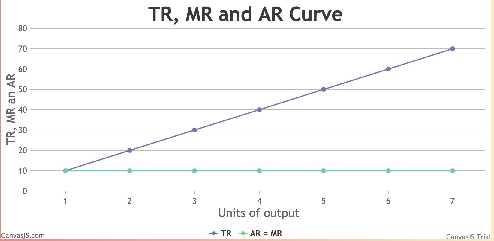
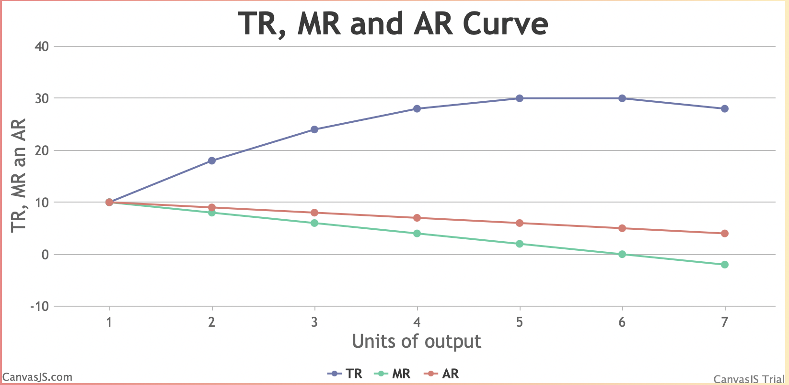

Chapters:-
1. Basic concepts of economics and allocations of resources
2.1 Market and revenue curves
2.2 Cost curves
2.3 Theory of price and output determination
2.4 Theory of factor pricing
3.1 Banking system and monetary policy
3.2 Government Finance
3.3 International trade
4.1 Poverty, inequality and unemployment and human resources
5.1 Foreign trade of Nepal and foreign employment
5.2 Development planning in Nepal
5.3 Sustainable development goals of UN and Nepal
6. Basic mathematics
A market is a place or process where buying and selling of goods and services take place.
1) Perfect Competition Market
A market system in which a large number of sellers sell a homogeneous product to a large number of consumers is known as perfect competition.
Features
2) Monopoly Market
Monopoly is a market system in which there is only one product supplier and a high number of customers.
Features
3) Imperfect Competition Market
I) Duopoly
Duopoly refers to market arrangements in which there are only two sellers of a product.
II) Oligopoly
Oligopoly is a market in which there are few sellers and numerous customers.
III) Monopolistic Competition
The market structure in which a big number of sellers sell differentiated heterogeneous items to a large number of consumers is referred to as monopolistic competition.
Revenue
Revenue is the monetary value obtained by a company or industry through the selling of goods and services.
Total Revenue
Total revenue is the total amount of sales receipts or money value collected by a business or industry from the sale of varied amounts of goods within a certain time period.
Average Revenue
The average revenue of a product is the revenue per unit of a product. The ratio of total revenue to quantity is known as average revenue.
Marginal Revenue
Marginal revenue is the additional income received by a company or industry by selling one more unit of production. Marginal revenue is defined as the ratio of change in total revenue to change in quantity.
Nature under perfect competition market
Nature under monopoly market
| Units | Price | TR | AR | MR |
|---|---|---|---|---|
| 1 | 5 | 5 | 5 | 5 |
| 2 | 5 | 10 | 5 | 5 |
| 3 | 5 | 15 | 5 | 5 |
| 4 | 5 | 20 | 5 | 5 |
| 5 | 5 | 25 | 5 | 5 |
| 6 | 5 | 30 | 5 | 5 |
| 7 | 5 | 35 | 5 | 5 |
The units of several commodities are shown in the table above. The table also displays the price, TR, MR, and AR. In a perfect competitive market, the commodity price remains constant. TR is the product of the price and the number of units. TR and units are averaged to form AR. The MR is the ratio of the change in TR to the change in quantity.
The y-axis in the above table represents TR, MR, and AR, while the x-axis represents the units of output. In this case, TR increases at a constant rate while MR and AR stay constant.
Relationship between TR, AR, and MR under perfect competition market
| Units | Price | TR | MR | AR |
|---|---|---|---|---|
| 1 | 10 | 10 | 10 | 10 |
| 2 | 9 | 18 | 8 | 9 |
| 3 | 8 | 24 | 6 | 8 |
| 4 | 7 | 28 | 4 | 7 |
| 5 | 6 | 30 | 2 | 6 |
| 6 | 5 | 30 | 0 | 5 |
| 7 | 4 | 28 | -2 | 4 |
The above table shows the units of many commodities. The pricing, Total Revenue (TR), Marginal Revenue (MR), and Average Revenue (AR) are also included in this table (AR). In a monopolistic market, the price of a commodity declines. Total Revenue (TR) is calculated as the total of price and unit sales. Average Revenue is calculated by dividing Total Revenue (TR) by the number of units sold (AR). The ratio of the change in Total Revenue(TR) to the change in quantity is known as the margin of revenue (MR).
The y-axis in the following table indicates Total Revenue (TR), Marginal Revenue (MR), and Average Revenue(AR), while the x-axis represents the units of output. Total Revenue (TR) rises at a decreasing rate until it reaches its maximum and begins to drop, whereas Average Revenue (AR) decreases but never becomes 0 and Marginal Revenue (MR) not only decreases but also becomes 0 and negative.
Relationship between TR and MR under monopoly market
Relationship between AR and MR under monopoly market
Numerical Problems.
1. a) Considered the following table.
| Units | Price | TR | MR | AR |
|---|---|---|---|---|
| 1 | 10 | 10 | 10 | 10 |
| 2 | 8 | 16 | 6 | 8 |
| 3 | 6 | 18 | 2 | 6 |
| 4 | 4 | 16 | -2 | 4 |
| 5 | 2 | 10 | -6 | 2 |
b) What types of market is this?
This is a monopoly market.
2. a) Considered the following table.
| Units | Price | TR | MR | AR |
|---|---|---|---|---|
| 1 | 20 | 20 | 20 | 20 |
| 2 | 20 | 40 | 20 | 20 |
| 3 | 20 | 60 | 20 | 20 |
| 4 | 20 | 80 | 20 | 20 |
| 5 | 20 | 100 | 20 | 20 |
b) What types of market is this? Why?
This is a Perfect Competition Market because price remains constant in perfect competiotion market.
3. a) You are given following table:
| Units | Price | TR | MR | AR |
|---|---|---|---|---|
| 1 | 10 | 10 | 10 | 10 |
| 2 | 10 | 20 | 10 | 10 |
| 3 | 10 | 30 | 10 | 10 |
| 4 | 10 | 40 | 10 | 10 |
| 5 | 10 | 50 | 10 | 10 |
| 6 | 10 | 60 | 10 | 10 |
| 7 | 10 | 70 | 10 | 10 |
b) Plot TR, MR and AR in Graph
c) What type of market is this?
This is a perfect competition market.
d) What is the nature of TR curve?
TR curve increases at constant rate.
4. a) Consider the following table:
| Units | Price | TR | MR | AR |
|---|---|---|---|---|
| 1 | 10 | 10 | 10 | 10 |
| 2 | 9 | 18 | 8 | 9 |
| 3 | 8 | 24 | 6 | 8 |
| 4 | 7 | 28 | 4 | 7 |
| 5 | 6 | 30 | 2 | 6 |
| 6 | 5 | 30 | 0 | 5 |
| 7 | 4 | 28 | -2 | 4 |
b) Plot TR, MR and AR in Graph
c) What type of market is this?
This is a monopoly market.
Click below for chapter 3 👇
Cost and Cost Curves